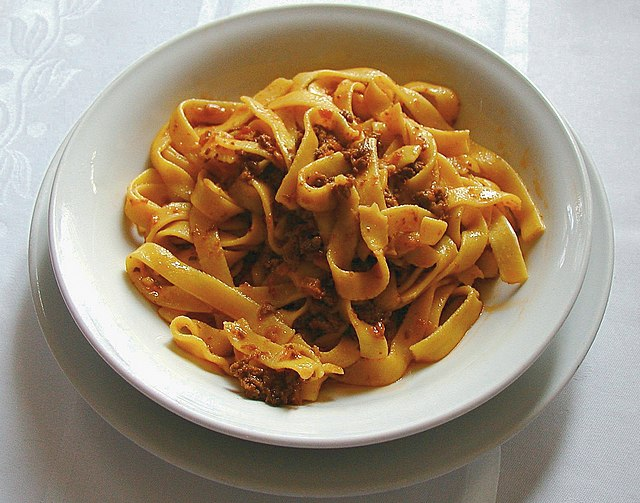

Ragu Recipe
- Beef - Cut the beef into 4 pieces that are around the size of a baseball. The cook time of this recipe assumes you do this.
- Celery and carrots sautéed with the onions and garlic is called "soffritto" in Italian cooking. It is a very traditional base for many Italian dishes. Cooking them slowly over low heat releases their flavour and adds an extra dimension to this dish. But it's not a deal killer if you skip these ingredients.
- Beef stock - You could use liquid beef stock instead of water + stock cubes.
- Pappardelle pasta is the thick wide pasta and is ideal for this recipe because the shreds of beef cling to the thick pasta strands. If you can't find it, just use the widest pasta you can find eg tagliatelle, fettuccine.
- Slow Cooker & Pressure Cooker/Instant Pot - flilow recipe to the end of Step 4 on the stove (or sauté function on your appliance). Turn heat up to high, add wine, stir and simmer for 3 minutes. Then transfer it all to the slow cooker or pressure cooker/IP, and add all remaining ingredients but DO NOT add water and extra salt & pepper.
- Sugar - The sweetness of canned tomatoes differs depending on brand (typically more expensive = sweeter). So adjust the sweetness of your sauce to your taste by using sugar - 1/2 tsp at a time.
- Low and slow - Turn the heat of the stove down to a level where it is bubbling very, very gently - a few bubbles here and there. This usually LOW on Gas Stoves but might be medium low on electric stoves. If it is too high - i.e. simmering rapidly (lots of bubbles appearing rapidly) - then you run the risk of the bottom burning. If it is too low, it will take longer to cook.
- Storage - sauce keeps for 5 days in the fridge, or months in the freezer.
